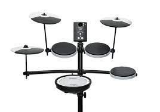

Dob
Rovid tortenelem:
A dob ütős hangszer, fogalmába sokféle, működési elvében, méretében, anyagában jelentősen különböző hangszer tartozik. Legjellemzőbben membranofon (kifeszített hártya rezgése által hangot adó) hangszerek tartoznak ide, de sok idiofon (szilárd test rezgése által hangot adó) hangszert is dobnak nevezünk. Közös bennük az, hogy megütéssel szólaltatják meg, és általában tompa, felhangszegény, rövid lecsengési idejű, „doboló” hangot adnak.
